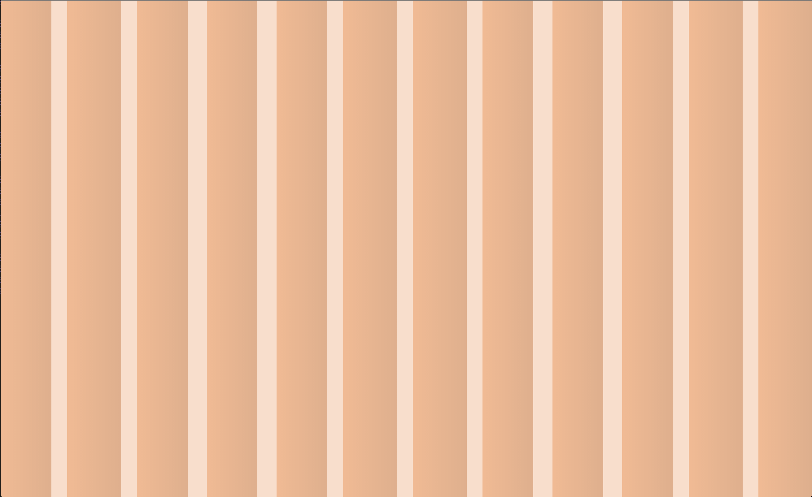
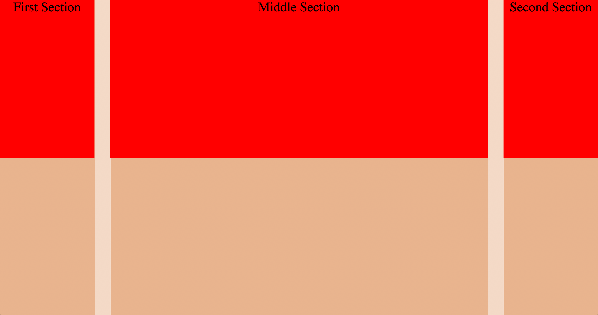
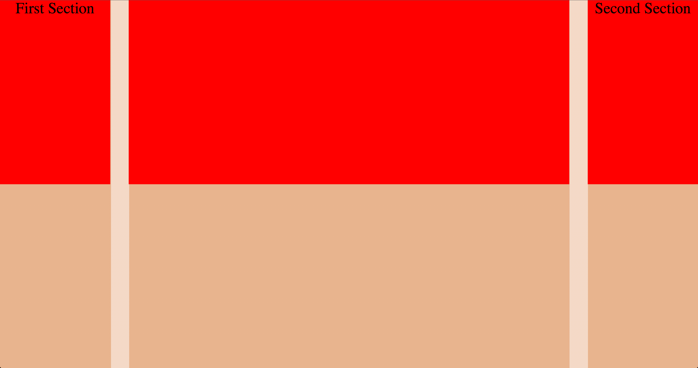
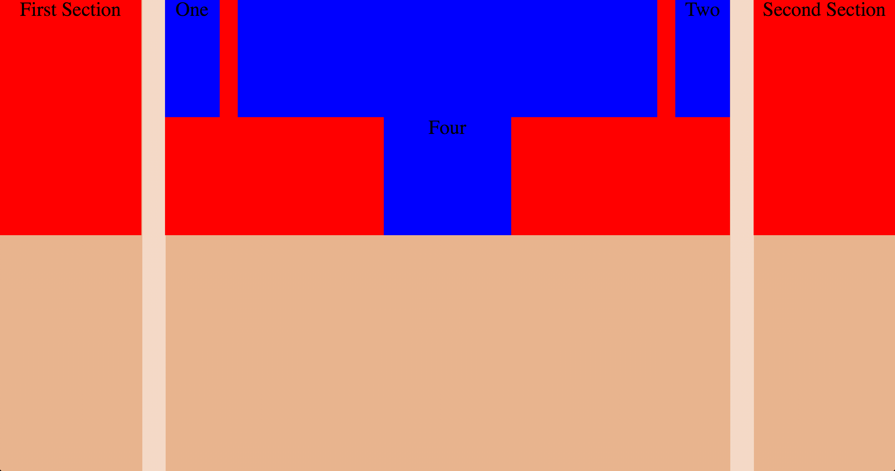
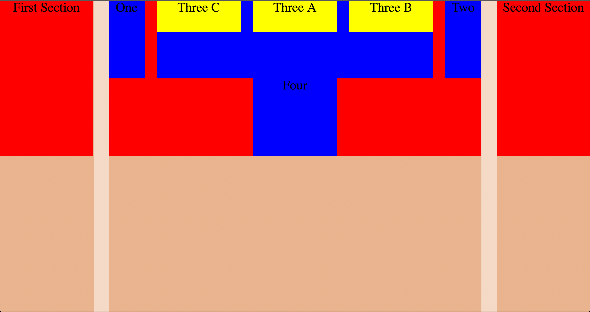

Responsive Web Design with Sass+Compass
Who Am I?
- Sam Richard
- Sr. Front End Developer, NBCUniversal
- Snugug on Twitter, GitHub, The Internet
- Co-Organizer of Team Sass, SassConf
I'm Going to Make Some Assumptions…
You design and build with Web Standards
You design and build Mobile First
Scratch that, you design and build Content First
It’s not about mobile first (or just small screen first) – it's about content first. But it happens that thinking about what works for mobile does work for other things as well.
Jeffery Zeldman
Your designs are Device Agnostic
You are Future Friendly
Responsive Web Design isn’t about current devices and known unknowns, it’s about future devices and unknown unknowns.

You Should Also…
Have a familiarity with Modern CSS
Have thrown away the phrase "Pixel Perfect"
The Web is an Inherently Unstable Medium
Ethan Marcotte
What Do You Need for RWD?
As outlined in Ethan Marcotte's Phrase-Coining A List Apart article, Responsive Web Design needs the three following things:
- Media Queries
- Fluid Grids
- Flexible Media
Using Compass Extensions
> gem install {extension}require '{extension}'@import '{extension}';Media Queries
Start with the small screen first, then expand until it looks like shit.
TIME FOR A BREAKPOINT!
Stephen Hay
Breakpoint
> gem install breakpointrequire 'breakpoint'@import 'breakpoint';Basic Media Queries - Sass
// Your basic media queries, min-width and min/max width, are super easy!
$small: 543px;
$medium: 794px;
$fence-sm: $small $medium;
#foo {
content: 'No Media Queries';
@include breakpoint($small) {
content: 'Small Media Query';
}
@include breakpoint($fence-sm) {
content: 'Fenced Media Query';
}
}Basic Media Queries - CSS
/* Nested Breakpoint calls become separate media queries */
#foo {
content: 'No Media Queries';
}
@media (min-width: 543px) {
#foo {
content: 'Small Media Query';
}
}
@media (min-width: 543px) and (max-width: 794px) {
#foo {
content: 'Fenced Media Query';
}
}
Basic Media Queries - CSS
/* Setting $breakpoint-to-ems: true will write Media Queries in Ems! */
@media (min-width: 33.9375em) {
#foo {
content: 'Small Media Query';
}
}
@media (min-width: 33.9375em) and (max-width: 49.625em) {
#foo {
content: 'Fenced Media Query';
}
}
Advanced Media Queries - Sass
// Advanced "and" media queries and "or" media queries made simple
$print-land: print monochrome (orientation landscape);
$fenced-landscape: screen 321px 543px, handheld (orientation portrait);
#foo {
@include breakpoint($print-land) {
content: 'Monochrome Print in Landscape';
}
@include breakpoint($fence-landscape) {
content: 'Screen media type between 300px and 500px or Handheld media type in Portrait';
}
}Advanced Media Queries - CSS
/* Advanced "and" media queries and "or" media queries made simple */
@media print and (monochrome) and (orientation: landscape) {
#foo {
content: 'Monochrome Print in Landscape';
}
}
@media screen and (min-width: 321px) and (max-width: 543px), handheld and (orientation: portrait) {
#foo {
content: 'Screen media type between 300px and 500px or Handheld media type in Portrait';
}
}
Resolution Media Queries - Sass
// Resolution media queries are a pain. Breakpoint makes them easy. We use the standard DPPX units.
$hidpi: min-resolution 1.5dppx;
$cross-reso: max-resolution 143dpi;
#foo {
@include breakpoint($hidpi) {
content: 'Device Pixel Ratio of at least 1.5';
}
@include breakpoint($cross-reso) {
content: 'Cross Browser Resolution Query'
}
}Resolution Media Queries - CSS
/* Breakpoint will transform the DPPX unit into cross-browser compatible resolution queries and DPI units into cross-browser DPR queries! */
@media (min-resolution: 1.5dppx), (-webkit-min-device-pixel-ratio: 1.5), (min--moz-device-pixel-ratio: 1.5), (min-resolution: 144dpi) {
#foo {
content: 'Device Pixel Ratio of at least 1.5';
}
}
@media (max-resolution: 143dpi), (-webkit-max-device-pixel-ratio: 1.48958), (max--moz-device-pixel-ratio: 1.48958) {
#foo {
content: "Cross Browser Resolution Query";
}
}
Media Query Fallbacks - Sass
// _mqs.scss
$touch: pointer coarse, 'no-query' '.touch';
$no-queries: 678px, 'no-query' '.no-mqs';
#foo {
@include breakpoint($touch) {
content: 'Touch Device';
}
@include breakpoint($no-queries) {
content: 'No Media Queries';
}
}Media Query Fallbacks - Sass
// style.scss
$breakpoint-no-queries: false;
$breakpoint-no-query-fallbacks: false;
@import "mqs";// touch.scss
$breakpoint-no-queries: true;
$breakpoint-no-query-fallbacks: '.touch';
@import "mqs";Media Query Fallbacks - CSS
/* style.css */
/* Only the Media Query gets printed out here! */
@media (pointer: coarse) {
#foo {
content: 'Touch Device';
}
}/* touch.css */
/* Only the Meida Queries with a .touch no-fallback get printed! */
.touch #foo {
content: 'Touch Device';
}
Fluid Grids
Building With Grids
Grids provide order to your design and structure to your information.
The best grids are specifc to your content and your design, as they are an extension of both.
Let's Cheat at CSS
// We can import all of Compass safely because it doesn't write any CSS.
@import 'compass';
// We switch our box model to Border Box.
// From [Paul Irish](http://paulirish.com/2012/box-sizing-border-box-ftw/)
*, *:before, *:after {
@include box-sizing('border-box');
}Singularity
> gem install singularitygsrequire 'singularitygs'@import 'singularitygs';Symmetric Grids
// Symmetric grids are expressed as a single number denoting how many equal sized columns you'd like.
$grids: 12;
$gutters: 1/3;Symmetric Grids
Asymmetric Grids
// Asymmetric grids are expressed as a list of number denoting the relative sizes of each column to each other.
$grids: 2 8 2;
$gutters: 1/3;Asymmetric Grids

Semantic Grids
Singularity is what we like to call a semantic grid system, meaning that instead of grid classes being generated that you then apply to your HTML, the grid is stored entirely within your CSS and applied directly to the element you want to use it on.
Spanning The Grid - HTML
<body>
<div class="main">Main Section</div>
<div class="first">First Section</div>
<div class="second">Second Section</div>
</body>Spanning The Grid - Sass
// Simply pass the number of columns you'd like to span and what column you'd like to start from.
$grids: 2 8 2;
$gutters: 1/3;
.first {
@include grid-span(1, 1);
}
.main {
@include grid-span(1, 2);
}
.second {
@include grid-span(1, 3);
}Spanning The Grid - Display
Responsive Grid Context - Sass
// add-grid allows you to automatically change your global Grid Context at various breakpoints
$grids: 12;
$grids: add-grid(2 8 2 at 700px);
$gutters: 1/3;
.first {
@include grid-span(3, 4);
@include breakpoint(700px) {
@include grid-span(1, 1);
}
}
.main {
@include grid-span(6, 7);
@include breakpoint(700px) {
@include grid-span(1, 2);
}
}
.second {
@include grid-span(3, 1);
@include breakpoint(700px) {
@include grid-span(1, 3);
}
}Responsive Grid Context - Display
Nested Grids - HTML
<body>
<div class="main">
<div class="one">One</div>
<div class="two">Two</div>
<div class="three">
<div class="a">Three A</div>
<div class="b">Three B</div>
<div class="c">Three C</div>
</div>
<div class="four">Four</div>
</div>
<div class="first">First Section</div>
<div class="second">Second Section</div>
</body>Nested Grids (Outer Grid) - Sass
$grids: 2 8 2;
$gutters: 1/3;
.first {
@include grid-span(1, 1);
}
.main {
@include grid-span(1, 2);
}
.second {
@include grid-span(1, 3);
}
Nested Grid (Outer Grid) - Display
Nested Grids (First Nesting) - Sass
@include layout(8) {
.one {
@include grid-span(1, 1);
}
.two {
@include grid-span(1, 8);
}
.three {
@include grid-span(6, 2);
}
.four {
@include grid-span(2, 4);
clear: both;
}
}Nested Grid (First Nesting) - Display
Nested Grids (Second Nesting) - Sass
@include layout(6) {
.a {
@include grid-span(2, 3);
}
.b {
@include grid-span(2, 5);
}
.c {
@include grid-span(2, 1);
}
}Nested Grid (Second Nesting) - Display
Fluid Media
Toolkit
> gem install toolkitrequire 'toolkit'@import 'toolkit';Basic Fluid Media
// Making images and HTML5 video fluid is pretty easy.
img, video {
max-width: 100%;
height: auto;
}Intrinsic Ratios - Sass
// Using [Intrinisc Ratios](http://alistapart.com/article/creating-intrinsic-ratios-for-video), you can even make embedded videos fluid!
.fluid-16-9 {
@include intrinsic-ratio;
}
.fluid-4-3 {
@include intrinsic-ratio(4/3);
}
<body>
<div class="fluid-16-9">
<iframe width="560" height="315" src="http://www.youtube.com/embed/hHloF85dQZg?rel=0" frameborder="0" allowfullscreen></iframe>
</div>
</body>Intrinsic Ratios - CSS
/* Intrinsic Ratio code is built for a small code footprint, so shared code is extended. */
.fluid-16-9, .fluid-4-3 {
position: relative;
height: 0;
}
.fluid-16-9 > *, .fluid-4-3 > * {
display: block;
position: absolute;
width: 100% !important;
height: 100% !important;
top: 0;
margin: 0;
padding: 0;
}
.fluid-16-9 {
padding-top: 56.25%;
width: 100%;
}
.fluid-4-3 {
padding-top: 75%;
width: 100%;
}Intrinsic Ratios - Display
Did I Mention?
Everything you just saw? Yah, it's backend independent. You can use it anywhere, with anything, for any project. Sass Rocks
Thank You
Slides available at
http://snugug.github.io/RWD-with-Sass-Compass/